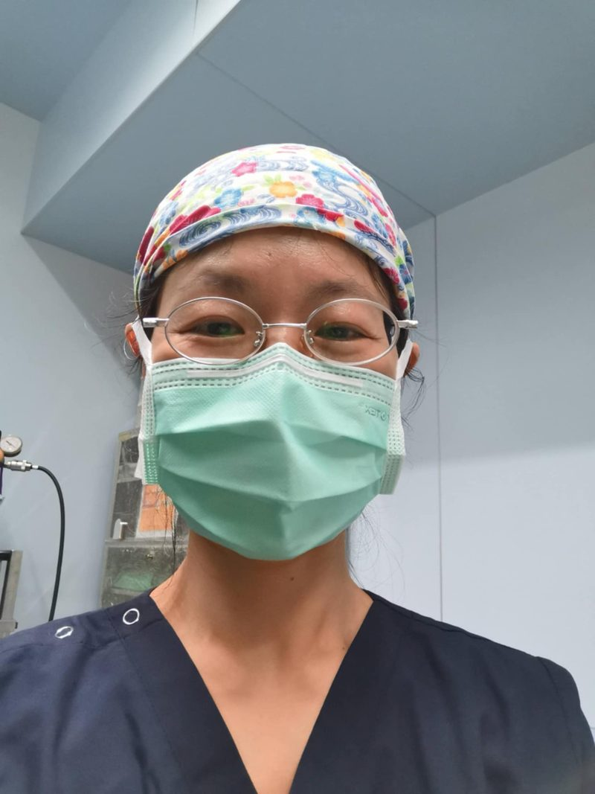
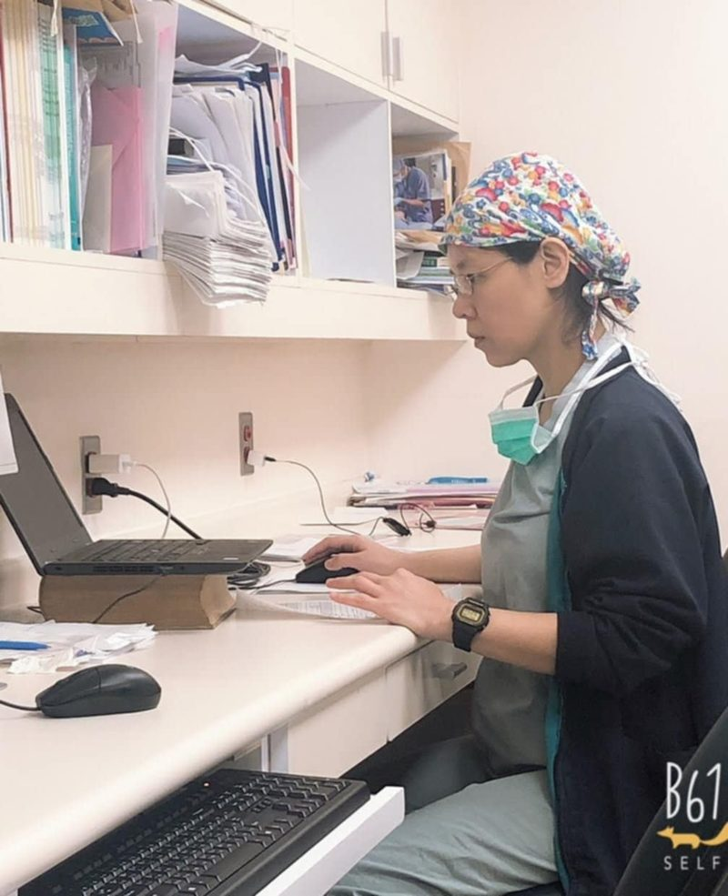
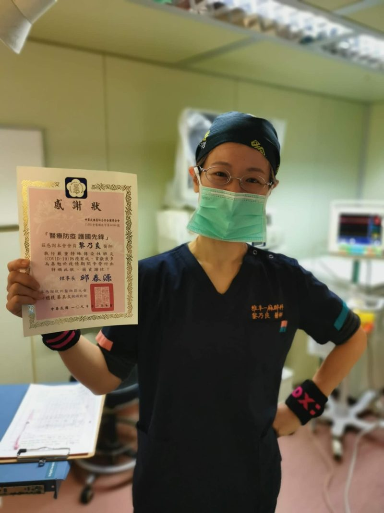

麻醉科主治醫師
ABOUT
麻醉專科醫師
黎乃良 醫師 Nai-Liang Li, M.D.
接受台大醫院麻醉專科完整訓練後，我在癌症醫院深耕臨床二十餘年，歷經無數高風險與複雜手術，長期投入癌症病人的麻醉與術後疼痛照護。
曾主導引入脊側神經阻斷（PVB）應用於乳癌手術，在臺灣開展區域麻醉作為主要止痛策略的臨床實踐。改善術後癒後品質，也重塑了病人對手術甦醒的經驗。
近年亦參與整形外科與診所手術場域，熟悉診外高難度處置的節奏與風險管理，持續優化各類手術中的麻醉安全與病人舒適度。
麻醉的價值，不在於「讓人睡著」，而在於能否平穩甦醒——而這份穩定，往往來自最安靜的守護。
醫字第024710號 麻專醫字第000580號
EXPERTISE
專長領域
從大型癌症手術到醫美診所手術，依手術類型與病人狀況，擬定合適的麻醉方式與止痛計畫。
醫美與診所手術麻醉
抽脂、隆乳等整形與醫美手術的麻醉規劃，在診所與手術中心場域落實麻醉監測與安全管理。
舒眠（靜脈）麻醉與全身麻醉
依手術大小與身體狀況，選擇舒眠麻醉（靜脈麻醉）或全身麻醉，並全程監測生命徵象。
神經阻斷術與區域麻醉
超音波導引神經阻斷，包含脊側神經阻斷（PVB）、胸壁與腹橫肌平面阻斷，減少全身性藥物用量。
術後止痛
結合神經阻斷與多模式止痛策略，減少術後疼痛、噁心等不適，幫助平穩恢復。
術前評估與麻醉風險
手術前評估病史、用藥與麻醉風險等級（ASA 分級），高齡與慢性病患者特別把關。
臨床研究方向：急性疼痛管理，乳癌、大腸癌手術及微創食道切除術的術後結果研究。
CAREER
經歷
- 2020 – 迄今雅丰時尚診所 專任麻醉主治醫師
- 2017 – 迄今國立台灣大學附設醫院 麻醉科兼任主治醫師
- 2019 – 2021國立政治大學 經營管理碩士（EMBA）
和信治癌中心醫院 醫療領導力培育中心學程 - 2010美國杜克大學醫院（Duke University Hospital）臨床進修
- 1998 – 2020和信治癌中心醫院 麻醉科資深主治醫師
- 1994 – 1998國立台灣大學附設醫院 麻醉科住院醫師
- 1987 – 1994國立台灣大學 醫學系
專業認證
- 1994 中華民國醫師證書（醫字第024710號）
- 1998 麻醉科專科醫師證書（麻專醫字第000580號）
- 1996 中國醫藥大學 針灸訓練結業
學會與委員
- 中華民國醫師公會全國聯合會 第十三屆健康傳播委員會委員
- 台灣區域麻醉暨止痛醫學會 監事
- 台灣麻醉醫學會 會員（1998 起）
- 台灣疼痛醫學會 會員（2013 起）
- 美國麻醉醫學會（ASA）會員（2010 起）
- 國際麻醉研究協會（IARS）會員
- 新北市醫師公會 會員
- 中華生技醫藥行業協會 顧問
論文刊登13 篇
- Comparison of hemodynamics and recovery of sevoflurane and isoflurane anesthesia in Chinese adult patients. Chen TL, Yang SF, Chang HC, Tai YT, Li NL, Lin CJ. Acta Anaesthesiol Sin. 1998 Mar;36(1):31-6.
- A simple, innovative way to reduce rhinitis symptoms after sedation during endoscopy. Li NL, Tseng SC, Hsu CC, Lai WJ, Su HC, Cheng TI, Chen WC, Peng WL. Can J Gastroenterol. 2011 Feb;25(2):68-72.
- The effect on improvement of recovery and pain scores of paravertebral block immediately before breast surgery. Li NL, Yu BL, Tseng SC, Hsu CC, Lai WJ, Hsieh PF, Peng WL, Chen CM. Acta Anaesthesiol Taiwan. 2011 Sep;49(3):91-5.
- Feasibility of Combined Paravertebral Block and Subcostal Transversus Abdominis Plane Block in the Postoperative Pain Control after Minimally Invasive Esophagectomy. Li NL, Liu CC, Cheng SH, Hung CF, Lai WJ, Chao IF, Peng WL, Chen CM. Acta Anaesthesiol Taiwan. 2013 Sep;51(3):103-7.
- Paravertebral block combined with pectoral nerve block for a myasthenic patient undergoing breast cancer surgery. Li NL, Chen YY. Research 2014;1:728.
- Pleural puncture of an epidural catheter in a thoracoscopic surgery – a case report. Li NL. Research 2014;1:782.
- Anything Other than Pain that Matters after Breast Cancer Surgery? A Randomized Controlled Study Comparing Three Anesthetic Modalities. Li NL, Chen CM, Peng WL, Cheng HC, Hung CF, Kao WH. Journal of Surgery 2014;10(2):125-33.
- 乳癌手術止痛新選擇。和信雙週刊 2013
- 脊側神經阻斷術－由乳癌手術說起。臺北市醫師公會會刊 2014
- 減少氣管插管、降低術後不適的乳癌手術麻醉新境界－脊側神經阻斷術。臺灣醫界雜誌 2014 Mar
- Comparison of the Short-term Postoperative Results of Prone Positioning and Lateral Decubitus Positioning during Thoracoscopic Esophagectomy. Li NL, Peng WL, Liu CC, Shih CH. Wideochir Inne Tech Maloinwazyjne. 2015 Apr;10(1):37-43.
- Paravertebral Block Plus Thoracic Wall Block Versus Paravertebral Block Alone for Analgesia of Modified Radical Mastectomy: A Retrospective Cohort Study. Li NL, Yu BL, Hung CF. PLoS One. 2016 Nov 9;11(11):e0166227.
- Intraoperative Cardiac Arrest Caused by Air Embolism during Video-Assisted Thoracoscopic Segmentectomy. Li NL, Lin CS, Shih CH, Liu CC. J Thorac Cardiovasc Surg. 2018 Mar;155(3):e111-3.
學術會議發表16 場
- A simple, innovative way to reduce rhinitis symptoms after sedation during endoscopy. TSA Annual Meeting 2010
- The Effect on Improved Recovery and Pain Scores Using Paravertebral Block before Breast Surgery. TSA Annual Meeting 2011
- Pleural Puncture of an Epidural Catheter in a Video-Assisted Thoracoscopic Surgery – a Case Report. TSA Annual Meeting 2011
- The Early Clinical Effectiveness of Combined Paravertebral Block and Subcostal Transversus Abdominis Plane Block in Minimally Invasive Esophagectomy. TSA Annual Meeting 2012
- The application of Paravertebral Block in Breast Surgery – an Institutional Experience. TSA Annual Meeting 2013
- The Ultrasound-Guided Paravertebral Block Usage in an Obese Patient Undergoing Breast Surgery. TSA Annual Meeting 2013
- Persistent Pain Following Breast Cancer Surgery: Profile of Taiwan Women. TPS Annual Meeting 2013
- The Ultrasound-Guided Paravertebral Block Usage in an Obese Patient Undergoing Breast Surgery. NYSORA Asia 2014, Malaysia
- Comparison of Different Anesthetic Modalities in Postoperative Pain, Complications and Satisfaction for Breast Cancer Surgery. NYSORA Asia 2014, Malaysia
- Regional Anesthesia for a myasthenic patient undergoing breast cancer surgery. 2014 亞洲疼痛醫學會（AAFPS）
- Anesthetic Modalities on Postoperative Pain, Complications and Satisfaction for Breast Cancer Surgery. 2014 亞洲疼痛醫學會（AAFPS）
- A Randomized Controlled Study Comparing Three Anesthetic Modalities in Satisfaction for Breast Cancer Surgery. TAS Annual Meeting 2014
- Feasibility of Thoraco-laparoscopic Esophagectomy in Prone Position. TAS Annual Meeting 2014
- Comparisons of Paravertebral Block Combined with Thoracic Wall Block versus Paravertebral Block alone for Analgesia of Modified Radical Mastectomy. WCA 世界麻醉會議 2016
- Paravertebral Block Combined with Blocks Targeting Pectoral Girdle as a Sole Anesthetic Technique for Breast Cancer Surgery in a Heart Failure Patient. TSA Annual Meeting 2016
- Comparisons of Paravertebral Block Combined with Thoracic Wall Block versus Paravertebral Block alone for Analgesia of Modified Radical Mastectomy. TSA Annual Meeting 2016
IN PRACTICE
在手術室裡
手術進行時，麻醉醫師是病人身邊始終在場的那一位。



FAQ
麻醉常見問題
手術前最常被問到的麻醉問題。實際情況仍以您的術前評估為準。
舒眠麻醉是全身麻醉嗎？
不完全一樣。舒眠麻醉一般指的是靜脈麻醉（靜脈鎮靜），由靜脈給藥讓人進入睡眠狀態，通常不需要插呼吸管；全身麻醉則會讓意識完全消失，多半需要呼吸道器材協助呼吸。不過舒眠麻醉的深度可以從淺到深，深的時候一樣可能影響呼吸，所以都需要麻醉醫師全程監測。
麻醉前為什麼不能吃東西、喝水？
麻醉會讓保護呼吸道的反射變弱，胃裡如果有食物或液體，可能逆流嗆進肺部，造成吸入性肺炎。各醫療院所的禁食時間依手術與麻醉方式而不同，請以您手術單位給的術前指示為準；有糖尿病或正在用藥的人，記得事先詢問哪些藥要照吃、哪些要暫停。
全身麻醉多久會醒？會不會醒不過來？
停止給藥後，多數人在幾分鐘到數十分鐘內就會醒來，但昏沉、想睡的感覺可能持續幾個小時。麻醉醫師在手術全程會監測心跳、血壓、血氧與麻醉深度，術前也會依身體狀況調整用藥。高齡、心肺疾病或曾有麻醉不良反應的人，請在術前評估時主動告知。
麻醉風險等級（ASA 分級）是什麼？
ASA 分級是美國麻醉醫學會訂定的術前身體狀況分級，從第 1 級（健康）到第 6 級，數字越高代表全身狀況越複雜、麻醉風險越高。它幫助麻醉團隊決定術前要做哪些檢查、手術中要多做哪些準備。
醫美手術的麻醉，要怎麼確保安全？
關鍵在三件事：手術前完整評估病史與用藥（包括瘦瘦針、保健品與健身用藥），手術中由麻醉專科醫師全程監測，以及手術場所備有急救設備與應變流程。選擇醫美手術時，可以主動詢問是由誰負責麻醉、麻醉期間由誰監測。
老人家全身麻醉風險比較高嗎？
年齡本身不是不能麻醉的理由，但高齡者常合併心肺、腎臟疾病或多重用藥，術後也比較容易出現譫妄等狀況。術前評估時把慢性病、用藥與平常的認知與活動狀況說清楚，麻醉醫師就能擬定更合適的麻醉方式。
診所要如何與黎醫師合作麻醉支援？
請填寫下方的「合作表單」，告訴我們診所位置、手術類型、需要的時段與頻率，我們會再與您聯繫，討論麻醉方式、設備需求與合作細節。
COLUMN
專欄分享
黎醫師的健康筆記：從麻醉台邊，寫給即將手術的你。